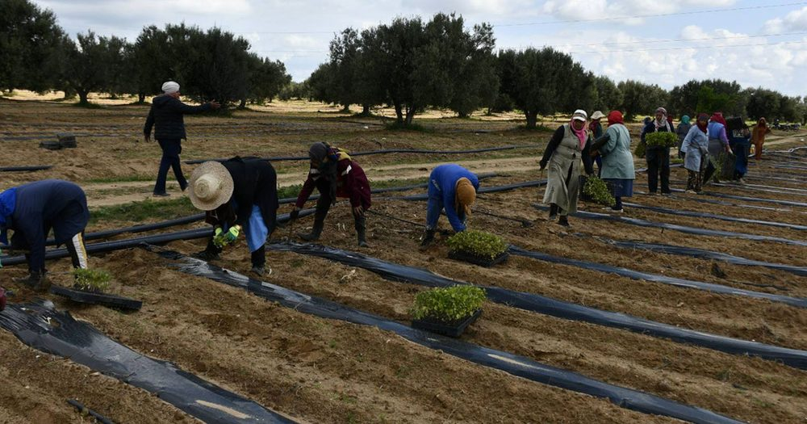
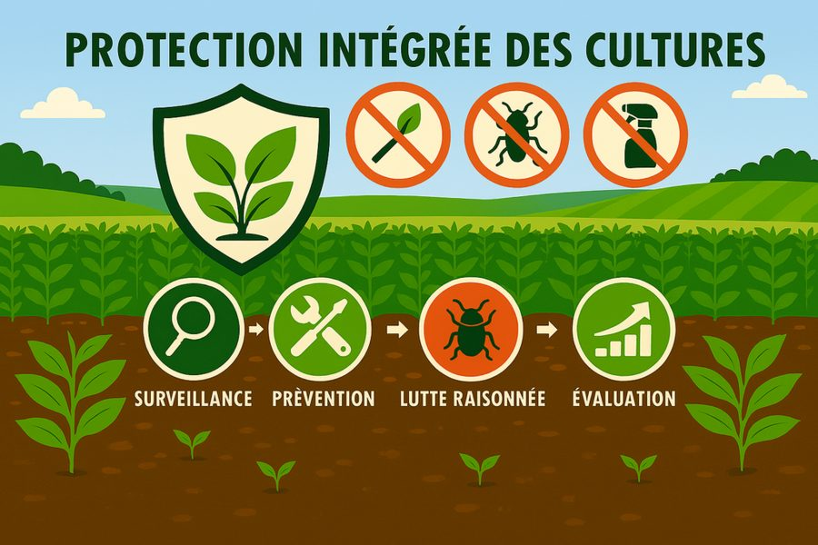
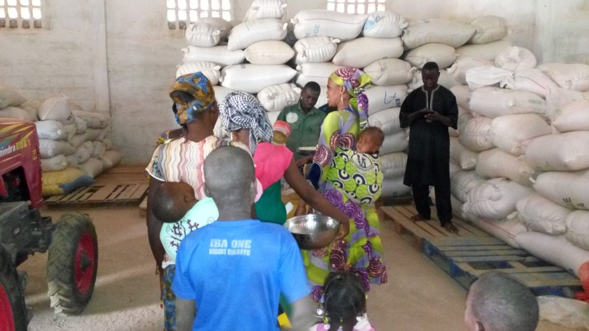

Appui-conseil aux producteurs
Formation, accompagnement technique et transfert de compétences pour une agriculture performante et durable
Un accompagnement de proximité
ZAMOHO met à disposition des producteurs une équipe d’agents techniques qualifiés pour les conseiller à chaque étape de leur cycle de production : choix des semences, préparation du sol, semis, fertilisation, protection des cultures, récolte et commercialisation. Nous organisons des formations théoriques et pratiques, des parcelles de démonstration et des visites de suivi personnalisées.
Objectif : améliorer les rendements, réduire les pertes et augmenter les revenus des agriculteurs.
Nos modules de formation

Itinéraires techniques
Maîtrise des étapes culturales pour le maïs, sorgho, mil, riz, niébé et arachide.

Gestion durable des sols
Fertilisation organique et minérale, techniques ACN, rotation des cultures.

Protection intégrée
Reconnaissance des ravageurs, utilisation raisonnée des pesticides, méthodes alternatives.

Post-récolte & stockage
Techniques de récolte, séchage, nettoyage, conditionnement et conservation des grains.
« Grâce aux formations de ZAMOHO, j’ai appris à mieux gérer ma parcelle de maïs. Mon rendement a augmenté de 35% en deux campagnes. Le suivi régulier de l’agent technique m’a permis de corriger rapidement mes erreurs. »
Nos actions récentes
- Organisation d’une journée paysanne à Ntogonasso (200+ participants)
- Participation à la bourse nationale des semences avec 50 CBAs
- Mise en place de 15 parcelles de démonstration à Koutiala, Sikasso et Bougouni
- Formation de 105 femmes au nettoyage et conditionnement des semences (appui AfricaRice)